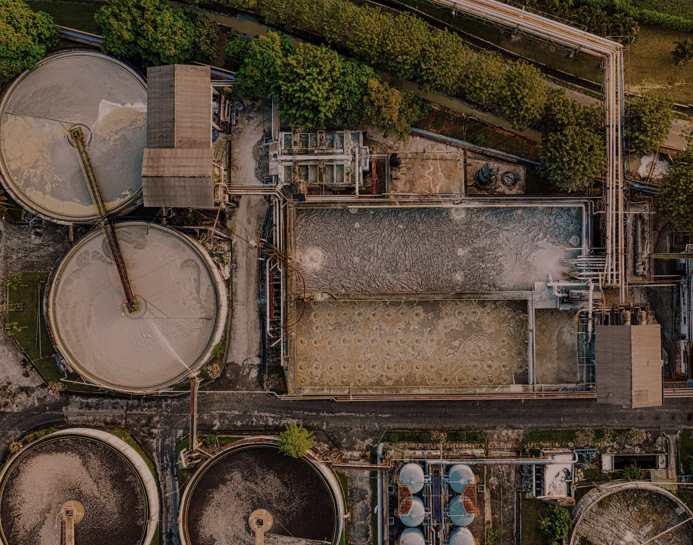

Відповідно до п. 9 ст. 44 Водного Кодексу України водокористувачі зобов'язані здійснювати спеціальне водокористування лише за наявності дозволу.
Спеціальне водокористування— це забір води з водних об'єктів із застосуванням споруд або технічних пристроїв, використання води та скидання забруднюючих речовин у водні об'єкти, включаючи забір води та скидання забруднюючих речовин зі зворотними водами із застосуванням каналів.
Кому необхідний дозвіл: суб’єктам господарювання, які використовують воду в об’ємі від 5 м3 на добу.
-
Термін дії дозволу:
- короткостроковий: на 3 роки;
- довгостроковий: від 3 до 25 років.
Спеціальне водокористування здійснюється юридичними і фізичними особами насамперед для задоволення питних потреб населення, а також для господарсько-побутових, лікувальних, оздоровчих, сільськогосподарських, промислових, транспортних, енергетичних, рибогосподарських (у т. ч. для цілей аквакультури) та ін. державних і громадських потреб.
Спеціальне водокористування є платним та здійснюється на підставі дозволу на спеціальне водокористування.
У дозволі на спеціальне водокористування встановлюються ліміт забору води, ліміт використання води та ліміт скидання забруднюючих речовин. У разі настання маловоддя ці ліміти можуть бути зменшені органом, що видав дозвіл, без коригування дозволу на спеціальне водокористування.
У разі необхідності строк спеціального водокористування може бути продовжено на період, що не перевищує відповідно короткострокового або довгострокового водокористування.
Водокористувачі, яким видано дозвіл на спеціальне водокористування, мають право скидати зворотні води в орендовані водні об’єкти за умови, що при цьому не перевищуються нормативи гранично допустимого скидання забруднюючих речовин.
-
Орган, що видає дозвіл:
- територіальними органами Держводагентства;
- Держводагентство (у разі використання води водних об’єктів у зоні відчуження та зоні безумовного (обов’язкового) відселення території, що зазнала радіоактивного забруднення внаслідок Чорнобильської катастрофи).
-
Види дозволів: на спеціальне водокористування:
- дозвіл на використання підземних вод (артезіанська свердловина),
- дозвіл на поверхневий водозабір (з річки, ставка та ін.),
- дозвіл на гранично-допустимий скид (ГДС) забруднюючих речовин у водні об’єкти (у разі скиду стічних вод у водні об’єкти).
- 
- Басейнового управління водних ресурсів України;
- Держгеонадр — у разі використання підземних вод;
- МОЗ — у разі використання вод водних об’єктів, віднесених до категорії лікувальних.
Дозвільні органи зобов’язані протягом п’яти робочих днів з дня надходження заяви надіслати в електронній формі копії документів щодо обґрунтування потреби у воді з помісячним нормативним розрахунком водокористування і водовідведення, а також опису та схем місць забору води та скидання зворотних вод до:
Державні органи зобов’язані протягом п’ятнадцяти календарних днів з дня одержання в електронній формі копій документів надати безоплатно органу, що приймає рішення про видачу дозволу на спеціальне водокористування, висновки в електронній формі щодо можливості його видачі.